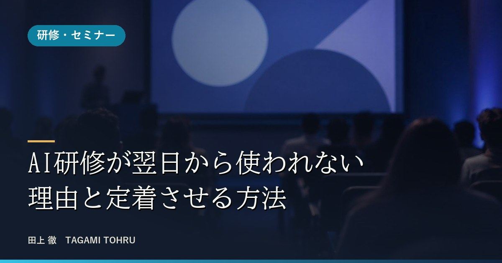
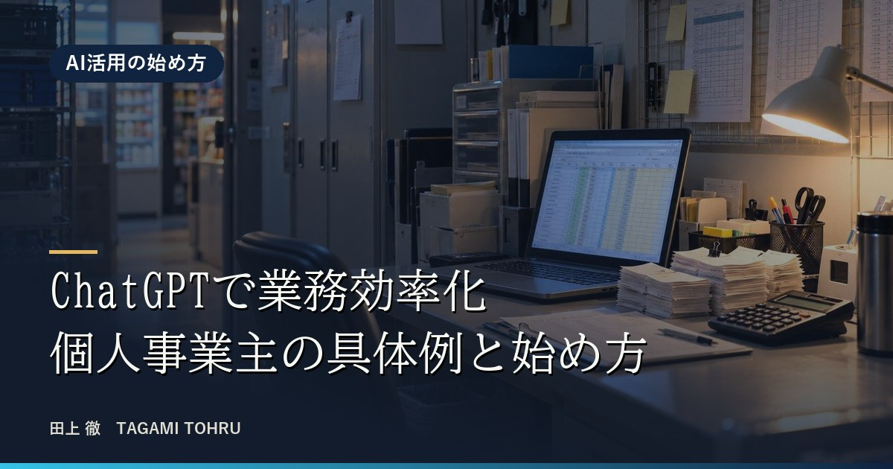
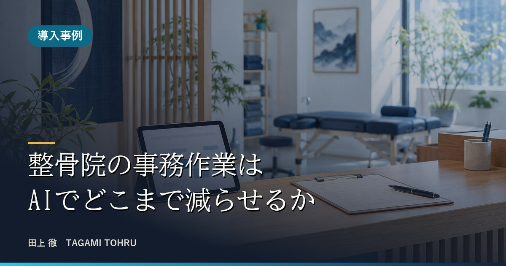

AI研修が翌日から使われない理由と定着させる方法
AI研修を受けた直後は使えても、しばらくすると誰も使わなくなる。その理由と、研修を現場に定着させる設計を、約100名の音声入力の勉強会と60分の税理士向けセミナーで実際に行った工夫から紹介します。
READ MORE
ChatGPTで業務効率化 個人事業主の具体例と始め方
ChatGPTを入れたのに仕事が減らない個人事業主へ。コンビニの入力作業が2時間から15〜30分になった例、接骨院の予約の二重入力をなくす例など、実際の支援から業務効率化の具体例と、最初の1つの選び方を紹介します。
READ MORE
整骨院の事務作業はAIでどこまで減らせるか
院長おひとりで回す整骨院・接骨院の事務作業は、AIでどこまで減らせるのか。LINE・電話・店頭の予約を紙とカレンダーに二重入力していた接骨院で、予約を自動化する流れを設計し骨子を作った実演をもとに、任せられる作業と人が残す作業を整理します。
READ MORE